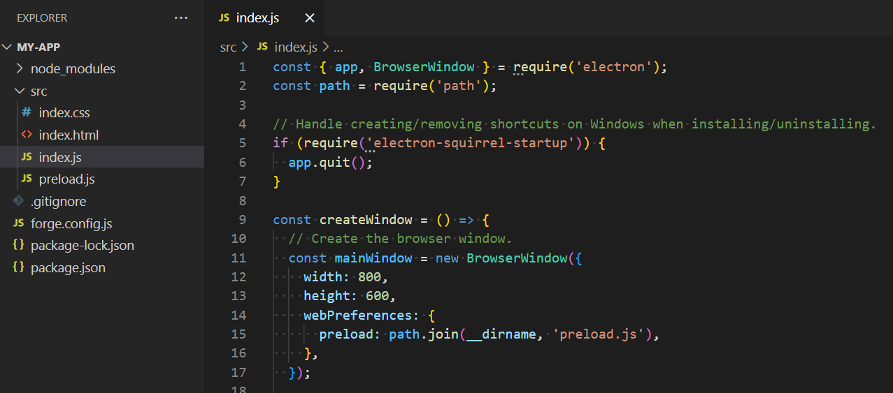
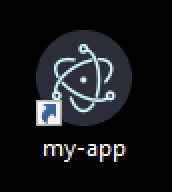

Electron
Electron is a framework for building desktop applications using JavaScript, HTML, and CSS.


 ...
...

Potential Drowbacks
- Larger App Size
- Higher Resource Usage
Potential Advantages
- Singe Codebase
- Leverage Web Talent
Let's create an App
npx create-electron-app my-app
index.js
const { app, BrowserWindow } = require('electron');
const path = require('path');
// Handle creating/removing shortcuts on Windows when installing/uninstalling.
if (require('electron-squirrel-startup')) {
app.quit();
}
const createWindow = () => {
// Create the browser window.
const mainWindow = new BrowserWindow({
width: 800,
height: 600,
...
index.js
app.on('ready', createWindow);
app.on('window-all-closed', () => {
if (process.platform !== 'darwin') {
app.quit();
}
});
app.on('activate', () => {
if (BrowserWindow.getAllWindows().length === 0) {
createWindow();
}
});
main process

render
render
render
index.js
const createWindow = () => {
// Create the browser window.
const mainWindow = new BrowserWindow({
width: 800,
height: 600,
webPreferences: {
preload: path.join(__dirname, 'preload.js'),
},
});
// and load the index.html of the app.
mainWindow.loadFile(path.join(__dirname, 'index.html'));
index.js
let tray = new Tray('/path/to/my/icon')
const contextMenu = Menu.buildFromTemplate([
{ label: 'Item1', type: 'radio' },
{ label: 'Item2', type: 'radio' },
])
tray.setToolTip('This is my application.')
tray.setContextMenu(contextMenu)
npm run make
